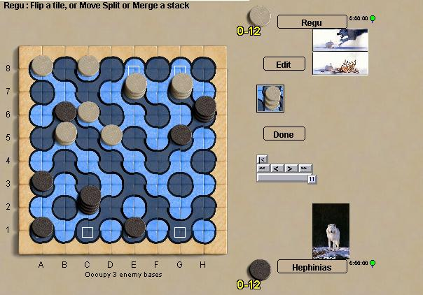

Truchet
Truchet is a stacking game whose unique feature is a board based on
Truchet tiles. There is only one type of tile, which can be
flipped and/or rotated to fill a plane with copies of
itself. In the game, tiles can be flipped to reconfigure
the pattern of rivers and islands. Stacks can move along
rivers, or can split or merge to for new stacks on the opposite
color. It's a pretty complex game with a lot going on
and many options for every move.
Important: The
game is so new that precise rules of the game are still subject to
change. The goal of the game at boardspace is to occupy three of
the four enemy bases, which
are marked with a white square on the board. You can also
win by capturing all the opposing pieces, as in Cameron's description.
Robots: It's still
early for this game, but the bots look pretty good to me..
|

|